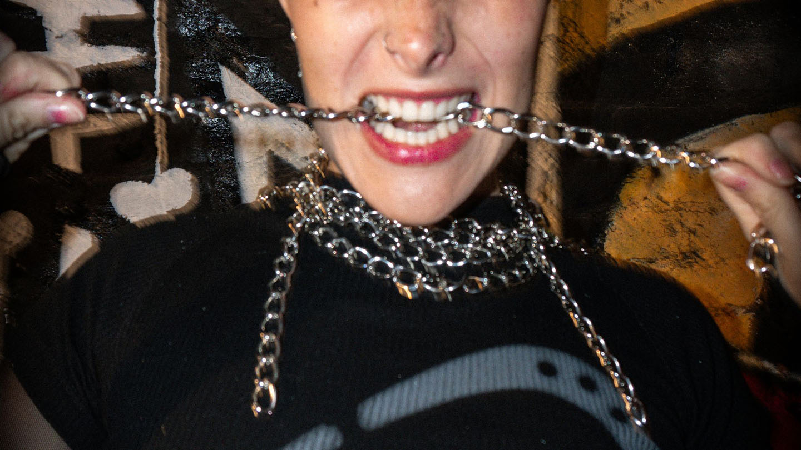

En Chained World, nos preocupamos por la durabilidad y el mantenimiento adecuado de nuestros productos. Para asegurar que tus accesorios conserven su belleza y calidad a lo largo del tiempo, te recomendamos seguir estos simples consejos de cuidado:
ECO CUERO
- Limpiar con un paño suave y húmedo para eliminar la suciedad superficial.
- Evitar el contacto con líquidos corrosivos o solventes.
- Guardar en un lugar fresco y seco cuando no esté en uso para evitar la exposición prolongada a la luz solar directa.
ACERO
- Limpiar con un paño suave y seco para eliminar el polvo y los residuos.
- Evitar el contacto con productos químicos agresivos que puedan dañar el acabado.
- Guardar en un lugar seco para evitar la oxidación.

Siguiendo estos sencillos cuidados, podrás disfrutar de tus accesorios de [nombre de tu emprendimiento] por mucho tiempo. Si tienes alguna pregunta adicional o necesitas asistencia, no dudes en ponerte en contacto con nosotros a través de los medios indicados a continuación.